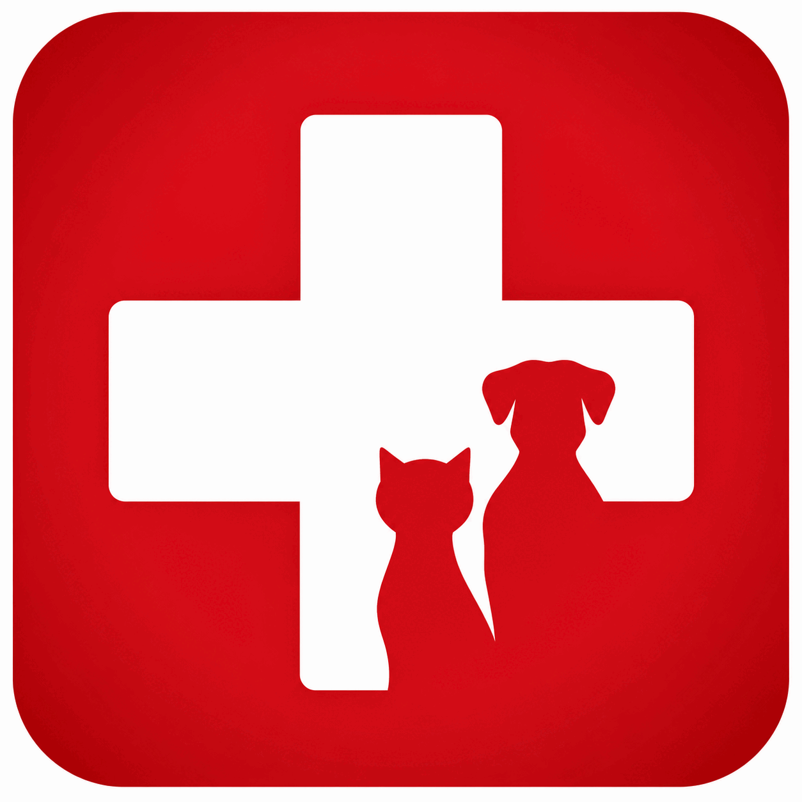
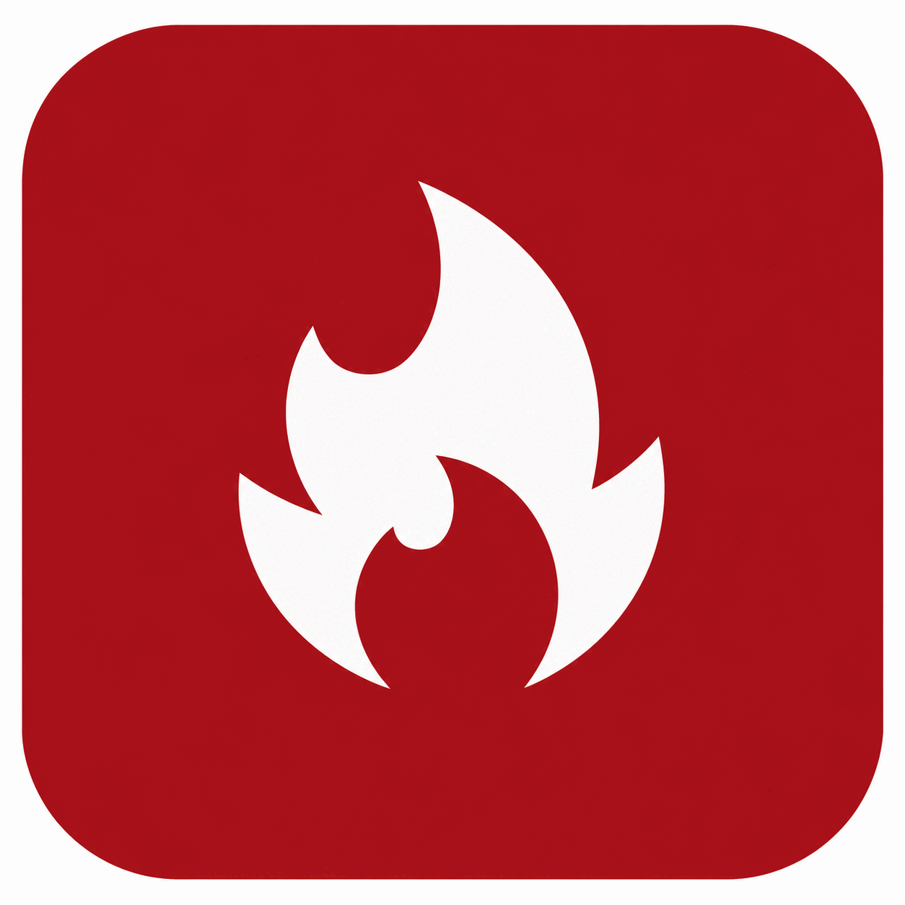
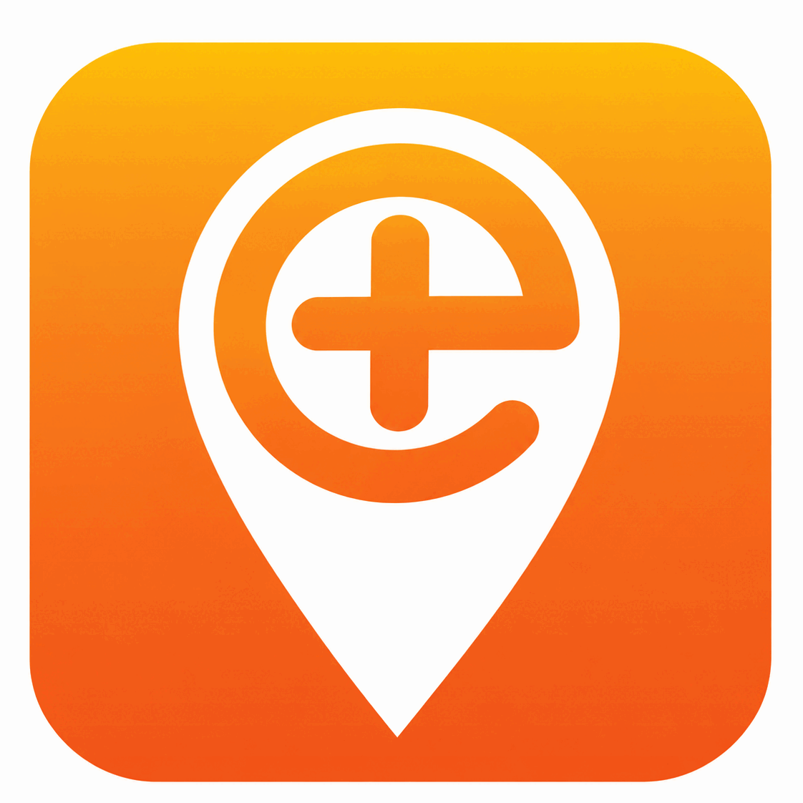
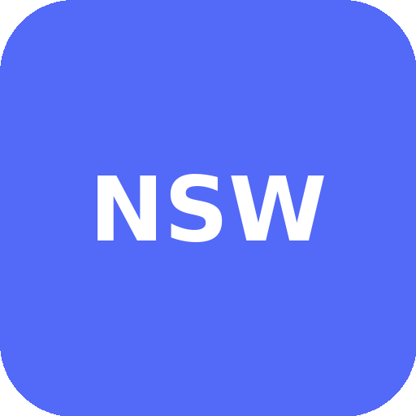
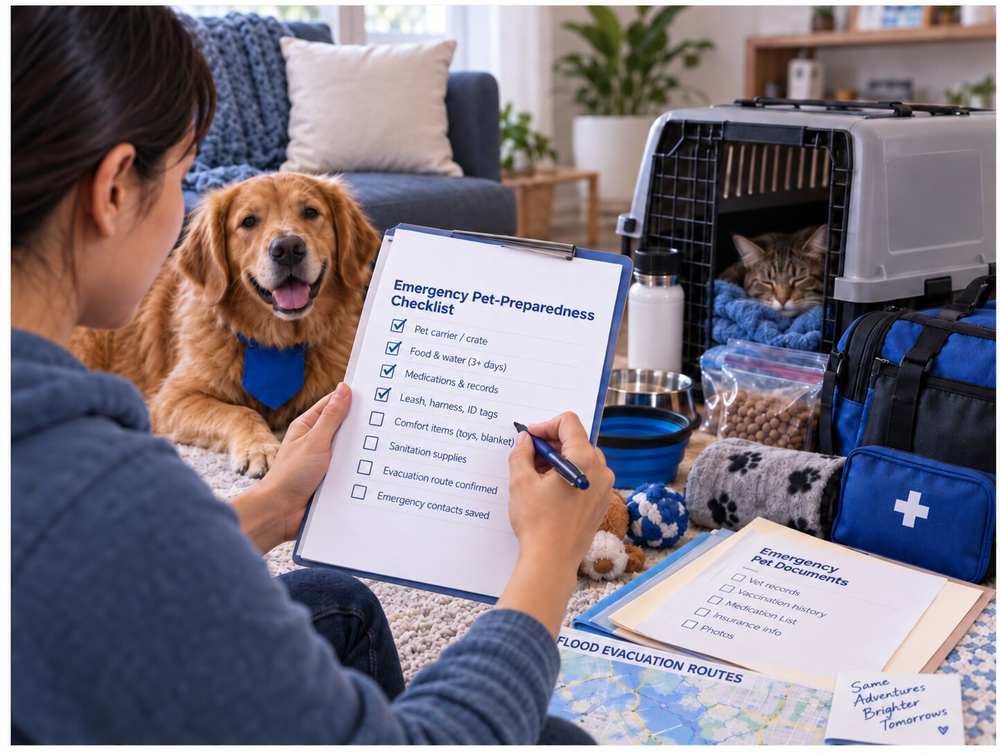
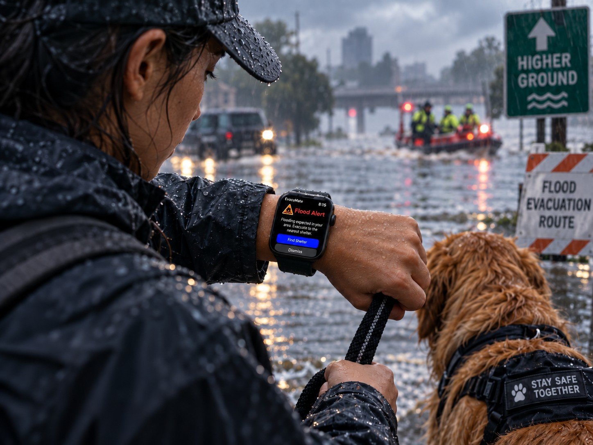
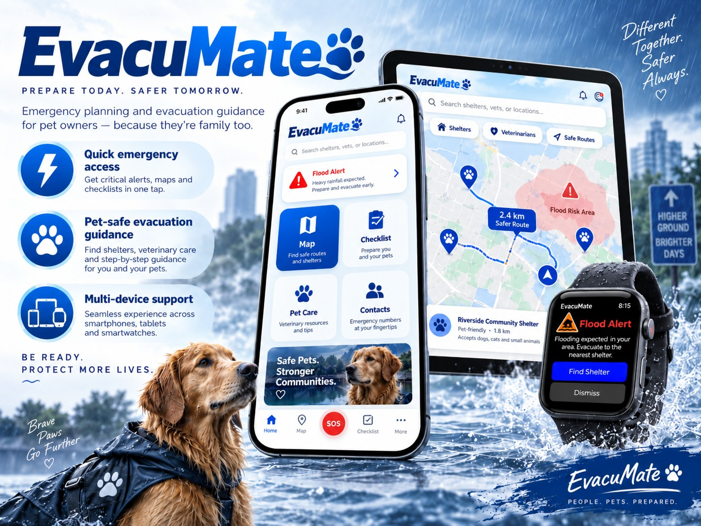

EvacuMate
洪水不会等你看完说明书。EvacuMate 是一款为宠物饲主设计的手表端应急指引应用—— 在信息过载、慌乱决策的几分钟里，用最少的点击完成求救、找到最近的宠物友好 避难所、确认逃生清单。
设计定位
项目背景
EvacuMate 是一套面向洪水场景的宠物应急准备与撤离辅助产品，主要服务宠物主人，并覆盖兽医相关使用需求。
现有洪水应急产品能够提供灾害预警、政府建议和基础导航，但对宠物家庭的支持较弱。宠物主人在实际撤离中不仅需要知道灾害发生， 还需要确认宠物物资、规划撤离路线、获取即时提醒，并在移动过程中快速完成关键操作。
EvacuMate 因此将宠物安全纳入完整的洪水应急流程，通过手机、平板和智能手表覆盖灾前准备与灾中撤离两个阶段。
业务诉求
建立针对宠物家庭的洪水应急体验，补充传统灾害应用在宠物撤离场景中的不足。产品重点解决：灾前缺少系统化宠物准备、灾中信息分散且行动指引不足、撤离过程中操作手机不便、宠物相关安全信息与普通灾害信息相互割裂、紧急环境下用户难以快速确认当前任务。
核心目标是将灾害信息转化为能够直接执行的撤离行动。
洞见用户诉求
清晰的行动步骤
高压环境下，用户更需要明确的步骤指导和检查清单，而不是大量信息。
可靠的导航支持
位置共享、撤离方向和路线信息是洪水撤离中的关键能力。
明显的紧急反馈
混乱环境中，单纯依赖文字通知容易被忽略，触觉和视觉反馈能够增强重要信息的可感知性。
宠物撤离支持
现有应急产品很少将宠物准备、安全确认和撤离过程整合在同一套体验中。
关键功能持续可用
灾害期间网络连接可能受到影响，重要资料和核心应急信息需要尽可能保持可访问。
竞品分析
| 产品 | 定位 | 优点 |
|---|---|---|
 First Aid for Pets |
宠物急救与应急指导 | 提供宠物急救和健康相关信息；通过分步骤指导降低紧急情况下的理解成本；支持宠物资料、药物信息和应急准备内容管理；宠物场景针对性强。 |
 My Bushfire Plan |
灾前准备与应急计划 | 将复杂的灾害准备拆分为清晰的行动步骤；支持提前整理撤离物资、目的地和行动条件；包含宠物及牲畜相关准备事项；清单式结构便于用户快速检查完成情况。 |
 Emergency+ |
紧急求助与精准定位 | 利用 GPS 快速提供当前位置；支持直接联系 Triple Zero、SES 和 Police Assistance Line；通过 what3words 帮助用户准确描述位置；操作路径短，适合高压紧急场景。 |
Alert SA
|
多灾种实时预警 | 支持火灾、洪水、极端天气和热浪等多种灾害提醒；可创建自定义 Watch Zones 接收指定区域通知；使用统一的灾害等级和视觉警示体系；地图与通知结合，便于快速了解周边风险。 |
 Hazards Near Me NSW |
本地灾害信息与风险监测 | 提供洪水、山火和海啸等实时灾害信息；信息直接来源于应急服务机构；支持个性化 Watch Zones 和位置相关通知；通过地图呈现灾害位置及周边风险，方便用户快速判断当前环境。 |
现有产品已经分别覆盖宠物急救、灾前准备、精准定位、多灾种预警和本地风险监测等能力，但彼此分散、互不联通。 EvacuMate 的设计机会在于将宠物准备、实时提醒、清单确认、精准定位和撤离导航，整合进同一套洪水应急体验。 产品重点不是增加更多灾害信息，而是帮助宠物主人将信息转化为实际行动。
业务目标
EvacuMate 将产品目标集中在洪水应急过程中最关键的两个阶段：
灾前准备
帮助用户提前完成宠物资料、物资、联系人和撤离计划整理。
灾中撤离
帮助用户快速接收警报、确认任务并获得撤离导航。
通过两个阶段的连续体验，减少用户临时搜索信息、遗漏重要事项以及反复判断的成本。

聚焦设计目标
四个设计目标本身就是撤离过程中依次发生的动作，因此用一条连接的流程呈现，而不是并列的卡片。
Prepare / 准备
将分散的宠物应急信息整理为可执行的准备清单，包括宠物资料、物资、联系人和撤离计划。
Alert / 提醒
通过明确的视觉信息和触觉反馈强化紧急状态，降低重要提醒被忽略的概率。
Navigate / 导航
提供简洁的路线和方向信息，帮助用户在撤离过程中快速判断行动方向。
Confirm / 确认
通过任务状态和清单确认机制，让用户快速判断关键事项是否已经完成。

设计方案
设计策略
按阶段划分产品体验、按设备分配任务、降低紧急状态下的操作负担、强化多感官反馈——四个方向把设计目标落到具体的产品结构上。
整个产品被拆分为 Planning（灾前准备）和 Evacuation（灾中撤离）。灾前允许用户进行较完整的信息整理和规划， 灾中则减少信息量，只保留与当前撤离行动直接相关的内容。
不同设备不重复承担相同功能，而是根据使用环境分工：手机与平板承担信息量较大的准备和管理任务，智能手表承担 撤离中的即时提醒、导航和状态确认。这种分工避免将复杂手机界面直接缩小到手表上，同时发挥可穿戴设备随身、 快速和低操作成本的优势。
撤离界面减少文字、选项和操作层级，只突出当前最重要的信息。主要设计原则：单屏聚焦一个核心任务、重要信息优先展示、缩短操作路径、强化状态区分、减少持续查看手机的需求。
智能手表结合视觉提示与触觉反馈传递紧急信息。在用户牵引宠物、搬运物资或快速移动时，即使无法持续查看屏幕， 也能够感知关键状态变化。
设计方案
手机与平板
主要承担灾前准备和信息管理，核心功能包括：
宠物资料
记录宠物基本信息，方便撤离和救援时快速核对。
应急物资清单
提前整理食物、药品等宠物应急物资，避免撤离时遗漏。
紧急联系人
集中管理兽医、亲友等关键联系人，一键拨打或发送消息。
灾害信息
整合洪水预警和政府发布的实时灾情信息。
撤离地点
标注宠物友好避难所，方便提前确认撤离目的地。
路线规划
提前规划前往避难所的撤离路线。
手机和平板提供更完整的信息空间，适合需要阅读、整理和规划的任务。

智能手表
主要承担实际撤离过程中的即时操作，核心功能包括：
第一时间推送洪水预警和紧急状态提醒。
明确告知用户此刻最该完成的一步操作。
引导用户和宠物前往最近的安全避难所。
标记准备事项和撤离步骤是否完成。
实时显示用户和宠物当前安全状态。
按住表冠即可快速呼叫求助。
智能手表始终佩戴在手腕上，用户无需频繁拿出手机，即可在移动状态下接收提醒和完成关键操作。
跨设备体验
手机、平板和智能手表分别承担不同阶段的任务，但保持信息连续：手机和平板负责完整信息与提前准备、智能手表负责即时行动与撤离辅助。
这种设计使产品能够同时适应低压力的准备环境和高压力的实际撤离环境。
视觉识别与设计系统
系统主色
手机和平板界面使用 Deep Blue（#000093）和 Warm Amber（#FEC252）， 传递安全、信任与温暖；智能手表版本使用更亮的 Bright Blue（#0303FF）和更深的 Deep Amber（#DA8E00），在深色背景下保持清晰的辨识度和对比度。
手机和平板核心界面、品牌主色、一级信息、主要视觉元素
智能手表界面、深色背景重点信息、导航状态、高亮元素
提醒、重点信息、次级状态、强调元素
智能手表高对比界面、强调状态、深色背景提示
功能色
危险、错误、失败状态
警告、等待处理、未完成状态
成功、完成、安全确认状态
灰阶
主要文字
次级信息
辅助信息
边框、分隔与弱化内容
Typography
系统使用 Montserrat 作为主要字体，清晰的无衬线风格兼顾易读性与可访问性。
视觉系统通过固定的颜色语义和文字层级，让用户能够快速区分危险、警告、行动和完成状态， 并保持手机、平板与智能手表之间的一致体验。
设计总结
EvacuMate 解决的核心问题不是洪水信息不足，而是现有产品无法完整支持宠物主人从准备到撤离的实际行动过程。 设计因此没有简单增加更多灾害内容，而是重新组织用户在不同阶段真正需要完成的任务：灾前通过手机和平板完成 宠物资料、物资和撤离计划整理，灾中通过智能手表提供高优先级提醒、导航和任务确认，减少移动状态下对手机的依赖。
最终形成一套围绕准备、提醒、导航、确认构建的跨设备宠物洪水应急体验。